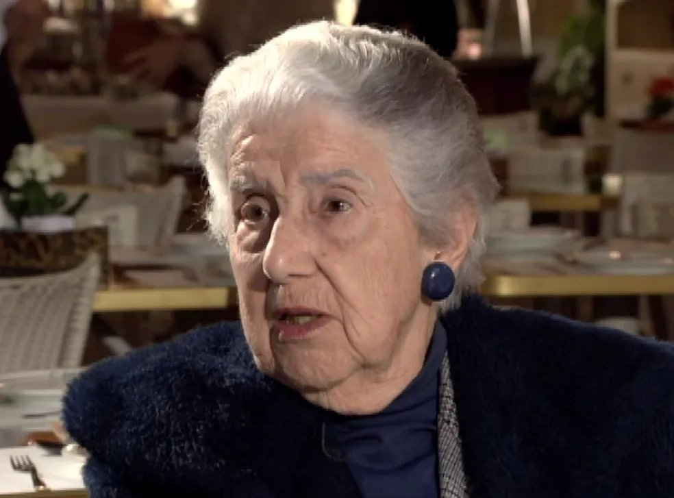
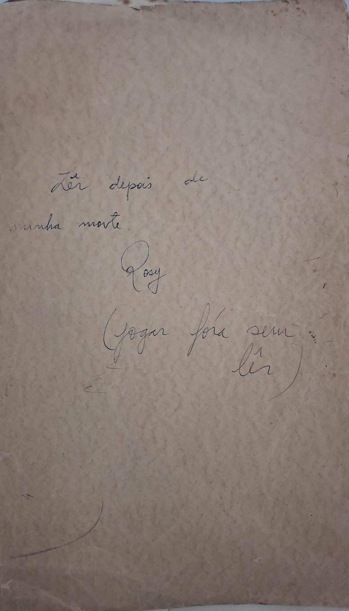
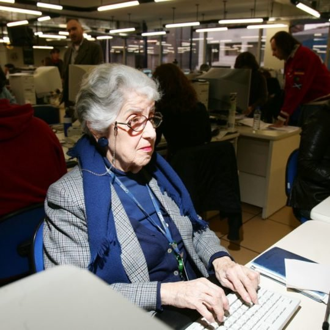
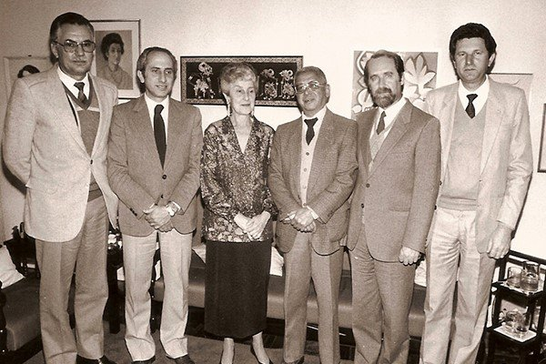

Na Prefeitura
Chefe do Serviço de Relações Públicas a partir de 1962, Rosy criticou o uso de carros oficiais e os “auxílios” pagos a jornalistas, e intermediou o tombamento do bebedouro da praça Coronel Enéas.

Acervo digital · 1948–2008
Primeira mulher com registro de jornalista no Paraná. Servidora pública. Poetisa. Os textos que ela guardou para si, tombados e digitalizados.
Começar pela capaROSI-050 · Capa manuscrita
Ler depois de minha morte.
Assim Rosy escreveu, à mão, na capa que guardava parte deste material. E acrescentou: “Jogar fora sem ler.” Rosy morreu em 2022. Lemos. Encontramos a jornalista, a servidora e, sobretudo, a poetisa.

Quem foi
Nasce em Curitiba.
Começa a trabalhar na Prefeitura de Curitiba. Em 1961, diria estar ali havia cerca de 15 anos.
Torna-se a primeira mulher com registro profissional de jornalista no Paraná, o registro nº 6.
Escreve a maior parte dos poemas do acervo, datilografados, datados e assinados em Curitiba.
Em Recife, no IV Congresso Nacional de Jornalistas, recebe versos de Adauto Gondim.
Assume a chefia do Serviço de Relações Públicas da Prefeitura.
Escreve, com Celina Silveira Luz, “A Mulher e o Jornalismo”.
Publica em O Estado do Paraná a reportagem “Se eu pudesse falar...”.
Morre, depois de seis décadas em redações de Curitiba, as últimas quatro na Gazeta do Povo.

Seis décadas
Rosy trabalhou em jornais de Curitiba por cerca de sessenta anos, as últimas quatro décadas na Gazeta do Povo. Ainda assim, quase nada desse jornalismo está no acervo que ela guardou.
A maior descoberta
34 poemas, quase todos escritos entre 1948 e 1952, quando ela tinha pouco mais de 20 anos. Amor, desejo, solidão, desilusão e a própria condição de mulher.
Rosy nunca se casou, num tempo que via isso como algo ruim. Seguiu sozinha e permaneceu um enigma.Os poemas, escritos em primeira pessoa, deixam ver uma vida íntima que ela não expôs publicamente.
Na cidade

Chefe do Serviço de Relações Públicas a partir de 1962, Rosy criticou o uso de carros oficiais e os “auxílios” pagos a jornalistas, e intermediou o tombamento do bebedouro da praça Coronel Enéas.
Em 1963, com Celina Silveira Luz, perguntou por que as mulheres eram julgadas capazes apenas de escrever crônicas sociais ou de moda, e defendeu as mesmas oportunidades nas redações.
O acervo
51 itens, todos digitalizados. Escolha um bloco para começar.
ROSI-004 a ROSI-037
34 poemas, 30 em português e 4 em espanhol. A maioria foi escrita entre 1948 e 1952 e traz local e data datilografados ao final.
ROSI-001 a ROSI-003
Três contos sem data, todos com mulheres no centro da história.
ROSI-038 a ROSI-042
Proposta, relatórios e cartas ligados à Prefeitura de Curitiba entre 1961 e 1963, quando Rosy chefiou o Serviço de Relações Públicas.
ROSI-043 a ROSI-051
Crônicas, a única reportagem do acervo, dois trabalhos para encontros de jornalistas, um bilhete, um texto confessional e a capa “Ler depois de minha morte”.
Quadro geral
Os 51 itens, ordenados por tipo e, dentro de cada tipo, por data. Os sem data ficam no fim de cada bloco. Clique numa linha para ver o documento.
| Nº de tombo | Tipo | Título | Págs. | Data | Suporte | Escrita |
|---|
O projeto
Este site reúne o acervo pessoal de Rosy de Sá Cardoso, sob custódia privada, identificado por meio do professor José Carlos Fernandes. O material estava em duas pastas de papel, guardadas dentro de uma pasta maior de plástico.
O trabalho foi feito para a disciplina optativa Violência Arquivística. Seguimos a análise de conteúdo de Laurence Bardin, a partir da leitura flutuante: um primeiro contato com todo o material, sem categorias prévias. Depois, separamos os textos por tipo e fizemos o tombamento.
Cada texto recebeu um número de tombo, de ROSI-001 a ROSI-051, mesmo os que têm várias páginas. A ordem é por tipo de texto e, dentro de cada tipo, por data, da mais antiga para a mais nova. As 13 cópias em carbono ou digitalizações repetidas não receberam número próprio. As páginas foram digitalizadas com o aplicativo CamScanner, em JPG.
Dos 51 itens, 33 têm o ano indicado no documento ou estimado a partir dele. Algumas datas foram deduzidas: o ano da reportagem foi lido como 1968 porque o cabeçalho diz “Sábado, 13 de janeiro”, e 13 de janeiro caiu num sábado em 1968, não em 1966.
Parte do material estava guardada sob uma capa com a inscrição “Ler depois de minha morte. Rosy. (Jogar fora sem ler)”. Publicar este acervo é também responder a esse pedido: escolhemos preservar e tornar legível uma produção que, de outro modo, poderia se perder.
Discentes: Isabelle Hoffmann e Nicole Ribeiro.
Docentes: José Carlos Fernandes e Myrian Regina del Vecchio de Lima.